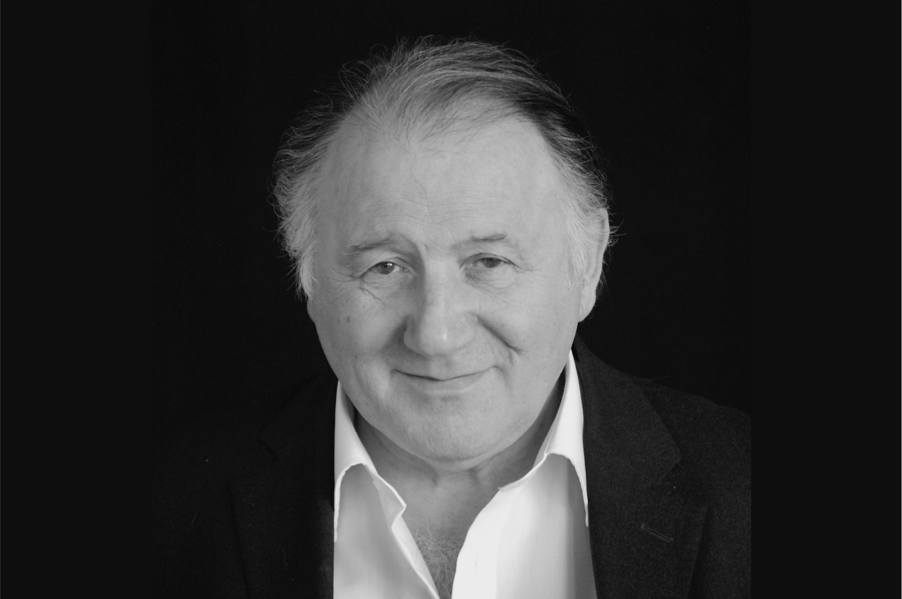

Artista visual y compositor japonés cuyo trabajo se centra en las características esenciales del sonido y la luz como elementos visuales. Su enfoque fusiona lo universal y transparente de las matemáticas, utilizadas como estética, dando lugar a instalaciones inmersivas y actuaciones en directo. (Forma, s/f)
"TEST PATTERN SERIES"
“Test pattern” es una serie de obras basadas en la misma idea y presentadas en distintos formatos. A través de estas instalaciones, Ikeda busca explorar las posibilidades perceptivas humanas, transformando diversos tipos de dato -texto, sonido e imagen- en códigos de barra y patrones binarios de 0s y 1s, acompañados de una banda sonora sincronizada. (Forma, s/f)
Test pattern [n°1], creado en 2008, fue la primera obra del proyecto. En esta pieza, Ikeda no solo puso a prueba la inmersividad del espectador, sino también el rendimiento de las máquinas, utilizando patrones sonoros y visuales generados en tiempo real. La instalación contó con ocho pantallas rectangulares de ordenador más dieciséis altavoces dispuestos en el suelo. Las pantallas parpadeaban a una velocidad superior a cien fotogramas por segundo en blanco y negro, todo ello expuesto en un espacio oscuro, creando una experiencia sensorial única. (Forma, s/f)
Ikeda continuó realizando estas instalaciones hasta 2022 con test pattern [n° 14], modificando la cantidad de pantallas, de altavoces, el lugar, la banda sonora y otros aspectos, sin dejar de lado la inmersividad del espectador.
Test Pattern [N°3]
Test Pattern [N°5]
Test Pattern [Times Square]
El enfoque en la transformación de datos en experiencias inmersivas refleja la interacción entre arte y tecnología y cómo el arte se adapta a lo digital para convertirse en una manifestación estética.
Además, en un mundo donde el procesamiento datos y la inteligencia artificial serán cada vez más omnipresentes en nuestra vida, este tipo de arte nos hace reflexionar sobre la estética de la información, la evolución de la sociedad en un mundo cada vez más digitalizado y las interrogantes sobre el futuro de la interacción entre humanos y máquinas.
PETER WEIBEL

Peter Weibel (1944-2023) fue un influyente artista, teórico y curador austriaco, reconocido por su papel clave en el desarrollo del arte mediático, el cine experimental y la teoría de los medios. Su enfoque interdisciplinario integró arte, ciencia y tecnología, y estuvo centrado en cuestionar los dispositivos tradicionales de representación visual. A partir de los años 60, participó activamente en movimientos como el cine expandido y el videoarte, impulsando prácticas inmersivas e interactivas que transformaron el rol del espectador. Fue director del ZKM (Zentrum für Kunst und Medien Karlsruhe), donde promovió la investigación sobre arte digital y entornos virtuales.Entre sus textos más destacados se encuentra "Expanded Cinema, Video and Virtual Environments", en el cual analiza la evolución de los lenguajes audiovisuales y su impacto en la cultura visual contemporánea. (ZKM, s/f)
EXPANDED CINEMA
En su artículo Expanded Cinema, Video and Virtual Environments, Peter Weibel analiza cómo, desde los años 60, el cine experimental rompió con las estructuras clásicas para convertirse en una experiencia multisensorial, interactiva e inmersiva. Incorporando tecnologías como el video, la proyección múltiple, la realidad virtual y la inteligencia artificial, estas prácticas transformaron la experiencia audiovisual de forma radical. Weibel sostiene que esta expansión no es solo artística, sino también cultural y tecnológica. Esta transformación refleja los cambios sociales actuales, marcados por la digitalización y la fusión entre humanos y tecnología. Así, el cine expandido se convierte en un laboratorio cultural que anticipa futuros posibles, cuestionando cómo los medios afectan nuestra percepción, subjetividad y participación social. Su análisis es clave para entender el papel del arte y la tecnología en la configuración de nuevas realidades culturales. https://www.mariamghani.com/docs/weibel.pdf
VINCULACIÓN
La vinculación entre el análisis teórico de Expanded Cinema de Peter Weibel y la obra Test Pattern de Ryoji Ikeda permite demostrar cómo el arte, diseño y tecnología se entrelazan para transformar nuestra forma de percibir, experimentar, y participar en lo audiovisual, configurando nuevas formas de producción cultural y conocimiento. En ambos casos se evidencia una transformación del dispositivo cinematográfico tradicional: Weibel explica cómo durante los años 60 el cine experimental desmanteló el aparato clásico de cine para expandirlo y resignificarlo. Por otro lado, Ryoji Ikeda en obras como test pattern o data.scan no solo trabaja con imágenes y sonido digitalizado, sino que convierte datos y algoritmos en materia estética. De la misma manera que los artistas mencionados por Weibel, Ikeda reestructura el aparato audiovisual al trabajar con tecnologías contemporáneas y transformandolas en experiencias sensoriales que trascienden la narrativa tradicional, haciendo música visual, que como nos comparte Midnight Science Fiction Feature (2013, párr. 1):
“The term visual music is a very broad term to describe the combination of image, sound and music, especially in an art-environment, in the form of film installations. But visual music as a concept can take many forms. I’d like to think it stems from expanded cinema”Es parte de lo que podemos considerar como Expanded cinema, por ello ambos, el texto como la obra, se encuentran estrechamente vinculadas.
La integración del espectador y su cambio en cuanto a la percepción de la realidad es un aspecto fascinante que se expresa y explica en ambos, en el caso de Expanded Cinema nos comenta como en el comienzo, para poder conseguir esta sensación de inmersión y participación dentro de la obra se utilizaban diversas pantallas, creando un espacio completamente nuevo, por otro lado en Test pattern nos encontramos con una única pantalla que de forma fluida provoca una inmersión total a través de los estímulos visuales y sonoros. Mientras el Expanded Cinema físico y estructural de los años 60 buscaba envolver al espectador multiplicando superficies y puntos de vista, utilizando la música como un acompañamiento que ayudaría a influir en la experiencia, Ikeda logra algo similar mediante la concentración extrema de información codificada, acompañada de frecuencias sonoras. La participación del espectador ya no se da al desplazarse dentro del espacio o el mirar hacia distintas direcciones, sino por la actividad sensorial directa, casi fisiológica, frente a la exposición de datos.
CONCLUSIÓN
Debido a todo lo analizado con anterioridad podemos llegar a la conclusión de que ambos, tanto el texto de Weibel como la obra de Ikeda convergen una visión profundamente transformadora de la relación entre el sujeto, la tecnología y la representación audiovisual. Ambos con su modernidad propia representan como los audiovisuales actuales construyen nuevas formas de percepción, inmersión y conocimiento. Desde el uso físico y espacial de múltiples pantallas en el expanded cinema hasta la condensación extrema de datos en una superficie como lo hace Ikeda en test pattern, lo que surge es una transformación absoluta del rol que ocupa el espectador, convirtiéndose este en un cuerpo implicado, dejando atrás el papel de observador pasivo. A su vez van transformando ambientes físicos en verdaderos espacios de virtualidad, tal como comparte Expanded cinema “Transforming physical space into the virtual interactive space of the WorldWide Web” (Weibel, 2002, p.133). Es algo que ambos comparten, aunque desde épocas y lenguajes distintos, la voluntad de desestabilizar los límites entre lo físico y lo virtual, entre lo real y representado. Esta convergencia no solo reinventa la experiencia estética, sino que plantea nuevas formas de producción de conocimiento, dónde la percepción sensorial, la abstracción de datos y el paisaje mediático se entrelazan.
Ikeda, R. (s/f). test pattern. Ryoji Ikeda. Enlace
Midnight Science Fiction Feature. (2013). Ryoji Ikeda: Exploring boundaries of cinema and music. Wordpress. Enlace
Weibel, P. (2002). Expanded cinema, video and virtual environments. En A. Zapp & M. Rieser (Eds.), New screen media: Cinema / art / narrative (pp. 133) BFI Publishing.
Peter Weibel. (s/f). ZKM. Recuperado el 25 de mayo de 2025, de Enlace
Virtual Environments. (s/f). Peter Welbel. Mariamghani.com. Recuperado el 25 de mayo de 2025, de Enlace
Peter Weibel, artist, curator and advocate of Media Art, 1944-2023. (s/f). Artreview.com. Recuperado el 25 de mayo de 2025, de Enlace